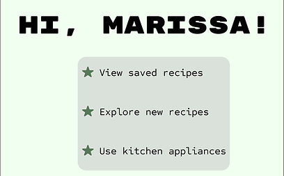

Hey, Chef!
A voice assistant prototype
Project Goal
Create a prototype for a voice-based interface where users of this system can talk to their kitchen to find and follow recipes while also controlling their appliances as they cook.
My Contributions
I was the only designer involved in this ~2 week project.
Skills Exercised
- Sketching
- Storyboarding
- Semi-structured interviewing
- State transition diagramming
- Wireframing
- Video prototyping
Getting Started
I sketched my kitchen approximately to scale and cut out/moved around different shapes to decide on the physical interface.
I then drew a story board to demonstrate the system's main functionality and interactions.
Seeking Initial Feedback
I engaged 2 individuals with varying demographics for different perspective and conducted semi-structured interviews via Zoom calls.
Potential User #1 is a full-time college student living in university housing with 3 roommates and a limited meal plan.
- Favorite Elements:
- Not a permanent install, accommodates different layouts
- The recipe visuals, specifically the recipe overview layout
- Suggestions:
- Phone app where user could sync recipes or upload their own recipe
- Add icons to the recipe titles of utensils/appliances/time
- Swap the cuisine category for a cook time category
- Ability to skip steps
- Eliminate number of commands needed to get to final outcome
- Concerns:
- General accessibility concerns; for example, the deaf/HOH community
- Safety concerns with assistant controlling open flames on stove/heating oven
Potential User #2 is a parent with three young adult children in their household and works a full-time job nearby.
- Favorite Elements:
- Intuitive interfaces and work flow
- Suggested commands on the screen
- Suggestions:
- Do not have the assistant read off recipe names
- Add pictures to each step of the recipe screens
- Have option to command what you know you want to do versus browsing
- Add a fourth explore recipes category for time constraints
- Ability to sync with Pinterest
- Concerns:
- Longer to say multi-step commands than to just do it yourself
Defining Further
I created a state transition diagram to define the different conversational paths, or commands, that the system will offer.
Increasing Fidelity
I utilized Figma to design wireframes of the screens. I used the check accessibility plugin to ensure that the color choices considered are accommodating

I created a prototype video using an iPad Pro to display the wireframes and TikTok's text-to-speech functionality to narrate then edited the video in a quasi-Wizard-of-Oz manner so that Hey, Chef! appears to function as expected.
Design Justification
Physical Interface
- iPad-shaped interface: mobility to secure to any surface & accommodate for varying kitchen layouts.
- Small/medium screen size: prioritize verbal interactions over visual/physical ones.
Hibernation Screen
- Blend into any kitchen and provide information passively until welcome word activation.
Greeting Screen
- On-screen example commands: no verbal disruption to conversation flow.
Explore Screen
- Recipe categorization: facilitate recipe searches based on varying user wants/needs.
- Tiles for each recipe with photos: engage and help users process information quicker.
Saved Recipe Screen
- Provide quick access to desired recipes that the user can curate.
- Potential enhancement: Pinterest integration.
Recipe Overview Screen
- Efficiently display the most essential information.
Recipe Step Screen
- Augment the verbal instructions with essential information needed for each step.
- Incorporated feedback: ability to override automatic appliance ignition.
- Potential enhancement: reminder to turn off appliance after recipe completion.
Your Kitchen Screens
- Display all connected devices and tools: provide user affordance and direct actions.